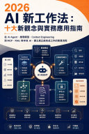

2026 AI 新工作法
從生成內容到自主完成工作，10 大新觀念與 6 大實戰工作流

2026 AI 新工作法
從生成內容到自主完成工作，10 大新觀念與 6 大實戰工作流
還在把 AI 當作高階計算機或搜尋引擎嗎？如果你的 AI 使用經驗還停留在「我下指令，它給答案，我再手動修改」，那麼你已經在 AI 時代的工作競爭中落後了。 時間來到 2026 年，AI 技術發生了本質上的轉變。模型不再是被動的問答工具，而是具備「行動力」的 Agent（代理人）。現在的 AI 能夠思考目標、將大任務拆解成小步驟、自己去網路上查資料、讀取你的行事曆、操作試算表，甚至在發現錯誤時「自我修正」。 《2026 AI 新工作法》 是一本專為一般讀者與職場工作者打造的實務操作指南。我們不談深奧的演算法與模型訓練，只談一件事：如何把這些最新技術，安全、可靠地塞進你每天的工作流程裡。 在這本書中，你將學會： 10 大 AI 新觀念：從 Agentic AI（代理型 AI）、Reasoning Model（推理模型）、Context Engineering（情境工程）到 Multi-Agent（多代理人協作），徹底翻轉你對 AI 的認知。 6 大實戰工作流：針對日常辦公痛點，手把手教你建立自動化流程。包含：資料整理、文案生成、市場調查、數據分析等，讓 AI 成為你最可靠的虛擬團隊。 資訊安全與本地端 AI：掌握 On-device AI 與本地 AI（Local AI）部署，讓最機密的資料永遠不離開你的電腦。 專屬 AI 助理打造法：從零開始設定 MCP（模型上下文協議），讓 AI 讀取你的內部資料，打造專屬於你的數位分身。 未來的職場，不會分成「懂 AI 的人」與「不懂 AI 的人」，而是會分成「能帶領 AI 團隊完成複雜專案的人」以及「只能把 AI 當作高階計算機的人」。 準備好升級你的工作方式了嗎？打開本書，正式進入 2026 年的 AI 實務世界！